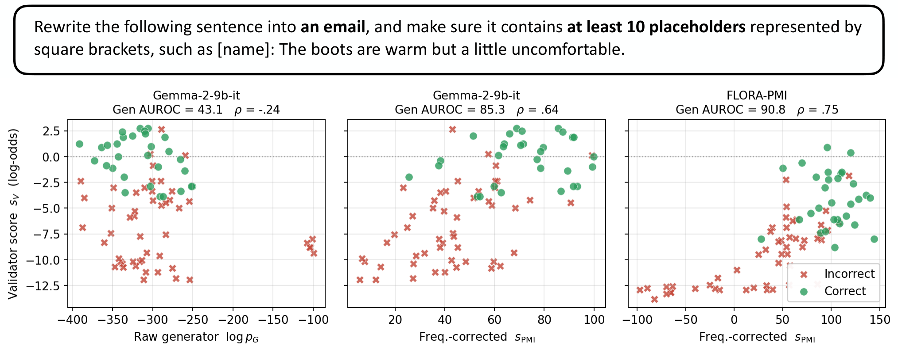

Ask an LLM for an example of a noble gas and it rarely says “Rn”. Ask it whether Rn is a noble gas and it says yes. The generator mixes up two things: whether an answer is correct, and how often people say it.
Model the LLM as an agent that is unsure which answers are correct. Then, for an answer y to a prompt x, the validator’s log-odds equal a frequency-corrected generator score:
So the raw generator score need not match the validator. The corrected score should.
Frequency-corrected Learning of Ordered Rank Alignment turns this relation into a fine-tuning loss.
FLORA-Neg gets pG′ from a wrong-answer prompt. FLORA-PMI uses the unconditional log p(y) and needs no extra prompt. Likelihood terms on labeled examples keep both modes accurate.
We derive the correction from a model of a rational agent, then train on it. FLORA raises generator–validator correlation by up to 0.27 and generator AUROC by up to 7.3 points over the strongest alternative, without hurting validator AUROC.
One IFEval prompt, Gemma-2-9b-it. Each point is a candidate answer (green: correct, red: incorrect). The vertical axis is the model’s own validator.

Three tasks: instruction following (IFEval), Python coding (HumanEval), category membership (Hyponymy). Generator AUROC: how well the corrected generator score separates correct from incorrect answers. ρ: Pearson correlation between generator score and validator log-odds. Both per prompt, then averaged.
FLORA is best or tied on generator AUROC in 5 of 6 settings, and best on ρ in 3 of 6 (within 1.4 points elsewhere). Its one clear loss is HumanEval with Qwen, where SFT reaches 94.1 AUROC to FLORA’s 88.9.
Each dot is the best variant per setting and metric: FLORA-PMI or FLORA-Neg for FLORA; SFT, Consistency FT or RankAlign for prior methods. “Strongest alternative” in the center panel also includes the untrained model.
FLORA with and without frequency correction in its training loss. Both use the same correction at test time.
| Task | Gen. AUROC | ρ ×100 |
|---|---|---|
| IFEval Gemma-2-9b-it | 78.5 → 85.1 | 61.1 → 62.8 |
| HumanEval Gemma-4-31b-it | 87.9 → 94.2 | 60.2 → 76.3 |
| Hyponymy Gemma-2-9b-it | 90.9 → 92.5 | 73.1 → 73.8 |
Without → with the correction in training.
Change in validator accuracy after FLORA training, in points. Each bar spans the two FLORA variants.
Validator accuracy rises on IFEval and HumanEval and dips by at most 2.5 points on Hyponymy. Validator AUROC never drops by more than 0.4 points.
The theory needs log r ≈ 0, which cannot be measured. We rank fixed sets of candidate answers and do not test greedy outputs. Correctness is treated as binary.